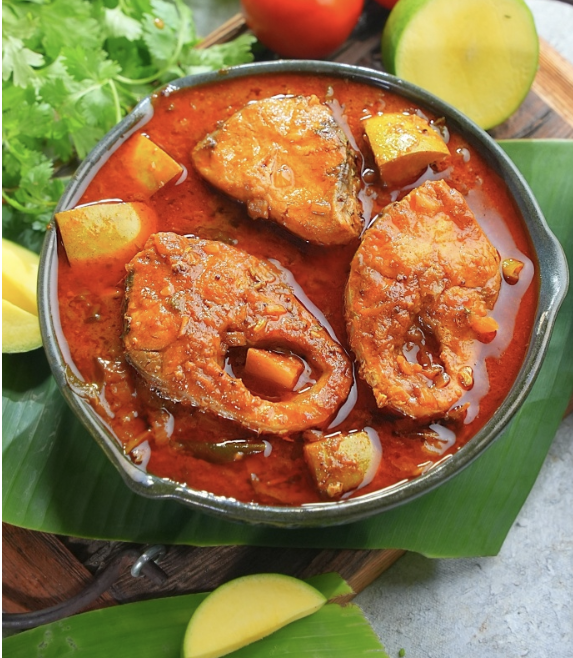

Nellore Chepala Pulusu Recipe
Chepala Pulusu is a traditional South Indian fish curry made with tamarind, spices, and fresh
fish, offering a tangy and spicy flavor. It is slow-cooked to perfection, allowing the fish to absorb the
rich and aromatic gravy.
Ingredients
- For the Pulusu Powder:
- 2 pinches Methi (Fenugreek) seeds
- ½ tsp Rai (Mustard) seeds
- ½ tsp Zeera (Cumin) whole
- 1 tbsp Dhaniya (Coriander) whole
For the Pulusu:
- ½ kg Fish Pieces and One fish Head
- 1 ¾ -2 tbsp Salt
- 3 – 3 ½ tbsp Chilli Powder
- ½ litre Tamarind juice (extracted from 45 gms tamarind)
- 1 Raw Mango pieces (size of a guava)
- 2 Paste of 2 tomatoes
- ½ tsp Haldi (Turmeric)
- 2 sprigs Curry Leaves
- 3 slit Green Chillies
- 1 cup Onion (Chopped)
- 1/3 cup Oil
- Coriander leaves chopped (Kothmir a little)
- 2 pinches Heeng (Asafoetida)
- ½ tsp Rai (Mustard Seeds)
Preparation
- Smear a little Salt, Turmeric, and Chilli Powder to the fish pieces and keep aside.
- Powder all the ingredients for the Pulusu Powder and keep aside.
- Heat oil in a thick bottomed pan. Put in Rai seeds. Then add chopped Onion, slit Green Chillies, and
Curry Leaves. Fry till onion turns light brown.
- Add Chilli Powder and Salt and let it bubble up nicely.
- Now add Tomato paste and close the lid on the pan. Cook on medium flame till the oil floats on top.
- After the oil come to the top, add Tamarind juice and let it cook until again oil seeps out around the
edges. Let the Pulusu come to a boil.
- Now add the pieces of fish to the Pulusu one by one. Add Heeng. Hold the Pan with a cloth or tongs, and
give it a gentle shake or rotate it gently so that the pieces settle down in the Pulusu nicely.
- Let the fish cook on medium flame, till oil floats well over the top of the curry. [Imp:Never stir the
curry with a ladle]
- Now drop the Raw Mango pieces gradually and gently into the Pulusu. Pick up the pot and again give it a
gentle shake or rotate gently so that the mango pieces settle down uniformly into the Pulusu. Close the
lid and let it cook on medium flame till oil floats to the surface.
- Sprinkle a little chopped Kothmir and take the pot off the stove. Let the Curry stand for 5-6 hours, or
even overnight, so that the pieces absorb the spices well and the flavours get infused to perfection.